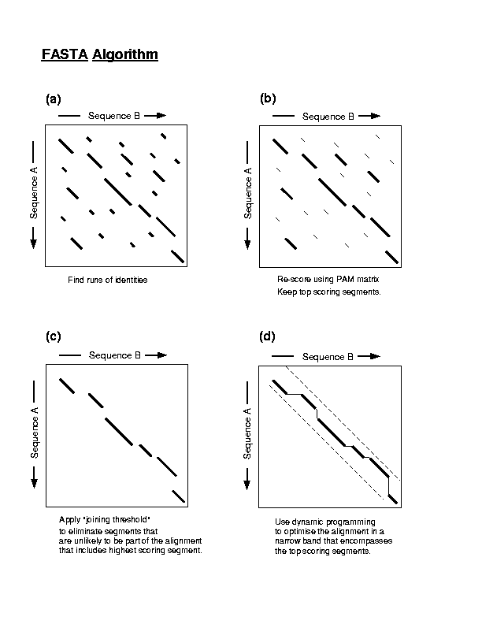
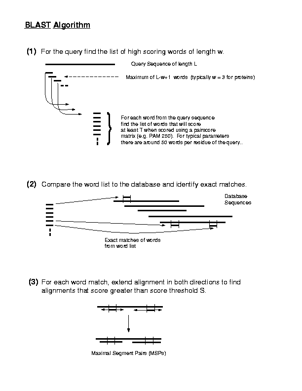
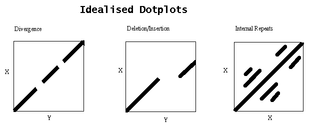
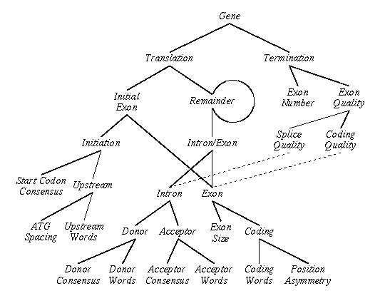

6 ADVANCED SEQUENCE ANALYSIS
The aim of this module is to explore more complex
bioinformatics tools for the analysis of nucleic acid sequences, i.e. more
demanding on either the user or the computer hardware, or both! These include
database mining software, in depth sequence comparisons, and an integrated
comprehensive interface to general DNA analysis.
6.1 SEQUENCE ALIGNMENT SCORES
Most computer programs for sequence alignments go
for a scoring approach, to answer the question: “Which alignment will
give me the highest score(s)?”. The score is a number that the program
assigns to how good an alignment is. Some sequence alignments do a rigorous
approach(e.g. the Smith-Waterman algorithm) and look for every possible
alignment and will find the most statistically likely, whilst others compromise
for CPU speed or biological significance.Concepts
of sequence aligning and scoring:
-
Find an area of similarity.
-
Extend the alignment, whilst the score keeps increasing(and even if it
does not try looking ahead to see if the score can be increased further
down the sequence).
-
Homologous sequences often contain gaps relative to each other. Give penalty
scores for inserting and extending gaps.
The scores are better interpreted as statistics and we will come onto that
later.
6.2 SCORING MATRICES
Scoring matrices are used internally by all sequence
alignment programs. Nucleic acid scoring matrices are rather trivial (in
most cases, nucleotide similarity is meaningless and only identity scores
in nucleotide sequence comparisons). However, amino acid matrices are central
to polypeptide comparisons. Understanding how these are built and how they
are used can help in making judicious use of sequence alignment software
and database mining tools.A preprint of Geoff
Barton's “Protein Sequence Alignment and Database Scanning” article
[17] is the basis for much of the content of this chapter. Please see the
printed book for his refined work.
6.2.1 Introduction
Aligning protein sequences on identity scores alone
may cause you to miss alignments where residues have been changed, over
time, to biochemically similar residues.All
algorithms to compare protein sequences rely on some scheme to score the
equivalencing of each of the 210 possible pairs of amino acids. (i.e. 190
pairs of different amino acids + 20 pairs of identical amino acids). Most
scoring schemes represent the 210 pairs of scores as a matrix of similarities
where identical amino acids and those of similar character (e.g. I, L)
give higher scores compared to those of different character (e.g. I, D).
Since the first protein sequences were obtained, many different types of
scoring scheme have been devised. The most commonly used are those based
on observed substitution and of these, the 1976 Dayhoff matrix for 250
PAMS [1] has until recently dominated.It is
essential that when you are comparing two sequences, either as a single
pairwise sequence comparison or as a database sequence similarity search,
that you have some idea of the evolutionary distance divergence of the
two sequences. Obviously for very similar sequences the matrix used would
matter less to find alignments, than for when you want to do very sensitive
database searches. When comparing similar sequences, scoring based on identity
could be sufficient. There is a trade off between sensitivity, computational
time and your personal result analysis time.
6.2.2 Scoring Schemes
Genetic code scoring
Whereas the identity scoring scheme considers all
amino acid transitions with equal weight, genetic code scoring as introduced
by Fitch [4] considers the minimum number of DNA/RNA base changes (0, 1
,2 or 3) that would be required to interconvert the codons for the two
amino acids. The scheme has been used both in the construction of phylogenetic
trees and in the determination of homology between protein sequences having
similar three dimensional structures [5]. However, today it is rarely the
first choice for scoring alignments of protein sequences.
Chemical similarity scoring
The aim with chemical similarity scoring schemes
is to give greater weight to the alignment of amino acids with similar
physico-chemical properties. This is desirable since major changes in amino
acid type could reduce the ability of the protein to perform its biological
role and hence the protein would be selected against during the course
of evolution. The intuitive scheme developed by McLachlan [6] classified
amino acids on the basis of polar or non-polar character, size, shape and
charge and gives a score of 6 to interconversions between identical rare
amino acids (eg F, F) reducing to 0 for substitutions between amino acids
of quite different character (eg. F, E). Feng et al. [3] encode features
similar to McLachlan by combining information from the structural features
of the amino acids and the redundancy of the genetic code.
Observed substitutions
Scoring schemes based on observed substitutions are
derived by analysing the substitution frequencies seen in alignments of
sequences. This is something of a chicken and egg problem, since in order
to generate the alignments, one really needs a scoring scheme but in order
to derive the scoring scheme one needs the alignments!Early
schemes based on observed substitutions worked from closely related sequences
that could easily be aligned by eye. More recent schemes have had the benefit
of the earlier substitution matrices to generate alignments on which to
build. Long experience with scoring schemes based on observed substitutions
suggests that they are superior to simple identity, genetic code, or intuitive
physico-chemical property schemes.
The Dayhoff mutation data matrix
Possibly the most widely used scheme for scoring
amino acid pairs is that developed by Dayhoff and co-workers [1]. The system
arose out of a general model for the evolution of proteins. Dayhoff et.
al.
examined alignments of closely similar sequences where the likelihood
of a particular mutation (e.g. A-D) being the result of a set of successive
mutations (e.g. A-x-y-D) was low. Since relatively few families were considered,
the resulting matrix of accepted point mutations included a large number
of entries equal to 0 or 1. A complete picture of the mutation process
including those amino acids which did not change was determined by calculating
the average ratio of the number of changes a particular amino acid type
underwent to the total number of amino acids of that type present in the
database. This was combined with the point mutation data to give the mutation
probability matrix (
M) where each element Mij gives the
probability of the amino acid in column j mutating to the amino
acid in row i after a particular evolutionary time, for example
after 2 PAM (Percentage of Acceptable point Mutations per 10^8 years).
PAM250 amino acid substitution matrix.
A B C D E F G H I K L M N P Q R S T V W Y Z
A 2 0 -2 0 0 -4 1 -1 -1 -1 -2 -1 0 1 0 -2 1 1 0 -6 -3 0
B 0 2 -4 3 2 -5 0 1 -2 1 -3 -2 2 -1 1 -1 0 0 -2 -5 -3 2
C -2 -4 12 -5 -5 -4 -3 -3 -2 -5 -6 -5 -4 -3 -5 -4 0 -2 -2 -8 0 -5
D 0 3 -5 4 3 -6 1 1 -2 0 -4 -3 2 -1 2 -1 0 0 -2 -7 -4 3
E 0 2 -5 3 4 -5 0 1 -2 0 -3 -2 1 -1 2 -1 0 0 -2 -7 -4 3
F -4 -5 -4 -6 -5 9 -5 -2 1 -5 2 0 -4 -5 -5 -4 -3 -3 -1 0 7 -5
G 1 0 -3 1 0 -5 5 -2 -3 -2 -4 -3 0 -1 -1 -3 1 0 -1 -7 -5 -1
H -1 1 -3 1 1 -2 -2 6 -2 0 -2 -2 2 0 3 2 -1 -1 -2 -3 0 2
I -1 -2 -2 -2 -2 1 -3 -2 5 -2 2 2 -2 -2 -2 -2 -1 0 4 -5 -1 -2
K -1 1 -5 0 0 -5 -2 0 -2 5 -3 0 1 -1 1 3 0 0 -2 -3 -4 0
L -2 -3 -6 -4 -3 2 -4 -2 2 -3 6 4 -3 -3 -2 -3 -3 -2 2 -2 -1 -3
M -1 -2 -5 -3 -2 0 -3 -2 2 0 4 6 -2 -2 -1 0 -2 -1 2 -4 -2 -2
N 0 2 -4 2 1 -4 0 2 -2 1 -3 -2 2 -1 1 0 1 0 -2 -4 -2 1
P 1 -1 -3 -1 -1 -5 -1 0 -2 -1 -3 -2 -1 6 0 0 1 0 -1 -6 -5 0
Q 0 1 -5 2 2 -5 -1 3 -2 1 -2 -1 1 0 4 1 -1 -1 -2 -5 -4 3
R -2 -1 -4 -1 -1 -4 -3 2 -2 3 -3 0 0 0 1 6 0 -1 -2 2 -4 0
S 1 0 0 0 0 -3 1 -1 -1 0 -3 -2 1 1 -1 0 2 1 -1 -2 -3 0
T 1 0 -2 0 0 -3 0 -1 0 0 -2 -1 0 0 -1 -1 1 3 0 -5 -3 -1
V 0 -2 -2 -2 -2 -1 -1 -2 4 -2 2 2 -2 -1 -2 -2 -1 0 4 -6 -2 -2
W -6 -5 -8 -7 -7 0 -7 -3 -5 -3 -2 -4 -4 -6 -5 2 -2 -5 -6 17 0 -6
Y -3 -3 0 -4 -4 7 -5 0 -1 -4 -1 -2 -2 -5 -4 -4 -3 -3 -2 0 10 -4
Z 0 2 -5 3 3 -5 -1 2 -2 0 -3 -2 1 0 3 0 0 -1 -2 -6 -4 3
The mutation probability matrix is specific for a
particular evolutionary distance, but may be used to generate matrices
for greater evolutionary distances by multiplying it repeatedly by itself.
At the level of 2,000 PAM Schwartz and Dayhoff suggest that all the information
present in the matrix has degenerated except that the matrix element for
Cys-Cys is 10% higher than would be expected by chance. At the evolutionary
distance of 256 PAMs one amino acid in five remains unchanged but the amino
acids vary in their mutability; 48% of the tryptophans, 41% of the cysteines
and 20% of the histidines would be unchanged, but only 7% of serines would
remain.When used for the comparison of protein
sequences, the mutation probability matrix is usually normalised by dividing
each element Mij by the relative frequency of exposure to mutation
of the amino acid . This operation results in the symmetrical “relatedness
odds matrix” with each element giving the probability of amino acid replacement
per occurrence of i, per occurrence of j. The logarithm of
each element is taken to allow probabilities to be summed over a series
of amino acids rather than requiring multiplication. The resulting matrix
is the “log-odds matrix” which is frequently referred to as “Dayhoff's
matrix” and often used at a distance of close to 256 PAM since this lies
near to the limit of detection of distant relationships where approximately
80% of the amino acid positions are observed to have changed [2].
BLOSUM - matrix from ungapped alignments.
Dayhoff-like matrices derive their initial substitution
frequencies from global alignments of very similar sequences. An alternative
approach has been developed by Henikoff and Henikoff using multiple local
alignments of more distantly related sequences [7]. First a database of
multiple alignments without gaps for short regions of related sequences
was derived. Within each alignment in the database, the sequences were
clustered into groups where the sequences are similar at some threshold
value of percentage identity. Substitution frequencies for all pairs of
amino acids were then calculated between the groups and this used to calculate
a log odds BLOSUM (blocks substitution matrix) matrix. Different matrices
are obtained by varying the clustering threshold. For example, the BLOSUM
80 matrix was derived using a threshold of 80% identity.
Matrices derived from tertiary structure alignments
The most reliable protein sequence alignments may
be obtained when all the proteins have had their tertiary structures experimentally
determined. Comparison of three dimensional structures also allows much
more distantly related proteins to be aligned accurately. Analysis of such
alignments should therefore give the best substitution matrices. Accordingly,
Risler et al. [8] derived substitution frequencies from 32 proteins structurally
aligned in 11 groups. On similar lines, Overington et al. [9] aligned 7
families for which 3 or more proteins of known three dimensional structure
were known and derived a series of substitution matrices. Overington et
al. also subdivided the substitution data by the secondary structure and
environment of each amino acid; however this led to rather sparse matrices
due to the shortage of examples. Bowie et al. [10] have also derived substitution
tables specific for different amino acid environments and secondary structures.
6.2.3 Which matrix should I use?
The general consensus is that matrices derived from
observed substitution data (e.g. the Dayhoff or BLOSUM matrices) are superior
to identity, genetic code or physical property matrices (e.g. see [3]).
However, there are Dayhoff matrices of different PAM values and BLOSUM
matrices of different percentage identity. So the question now is which
of these should be used.Schwartz and Dayhoff
[2] recommended a mutation data matrix for the distance of 250 PAMs as
a result of a study using a dynamic programming procedure [11] to compare
a variety of proteins known to be distantly related. The 250 PAM matrix
was selected since in Monte Carlo studies (see Section 4.1) matrices reflecting
this evolutionary distance gave a consistently higher significance score
than other matrices in the range 0-750 PAM. The matrix also gave better
scores when compared to McLachlan's substitution matrix [6], the genetic
code matrix and identity scoring. Recently, Altschul [12] has examined
Dayhoff style mutation data matrices from an information theory perspective.
For alignments that do not include gaps he concluded, in broad agreement
with Schwarz and Dayhoff, that a matrix of 200 PAMS was most appropriate
when the sequences to be compared were thought to be related. However,
when comparing sequences that were not known in advance to be related,
for example when database scanning, a 120 PAM matrix was the best compromise.
When using a local alignment method, Altschul suggests that three matrices
should ideally be used: PAM40, PAM120 and PAM250. The lower PAM matrices
will tend to find short alignments of highly similar sequences, while higher
PAM matrices will find longer, weaker local alignments. Similar conclusions
were reached by Collins and Coulson [13] who advocate using a compromise
PAM100 matrix, but also suggest the use of multiple PAM matrices to allow
detection of local similarities of all types.Henikoff
and Henikoff [14] have compared the BLOSUM matrices to PAM, PET, Overington,
Gonnet [15] and multiple PAM matrices by evaluating how effectively the
matrices can detect known members of a protein family from a database when
searching with the ungapped local alignment program BLAST [16]. They conclude
that overall the BLOSUM 62 matrix is the most effective. However, all the
substitution matrices investigated perform better than BLOSUM 62 for a
proportion of the families. This suggests that no single matrix is the
complete answer for all sequence comparisons. It is probably best to complement
the BLOSUM 62 matrix with comparisons using PET91 at 250 PAMS, and Overington
structurally derived matrices. It seems likely that as more protein three
dimensional structures are determined, substitution tables derived from
structure comparison will give the most reliable data.A
good strategy may be to use one matrix to find ´´similar'' sequences
and produce an initial alignment, then view the results and do more rigorous
pairwise alignments with appropriate matrices.Alignments
will also depend upon the sensitivity of the algorithm you have used, the
gene model if chosen and parameters. You should always use your biological
common sense when analysing computational results.Recommended
search approach
-
Blast search of your protein sequence against a protein
database using the default matrix BLOSUM 62 or PAM250.
-
If you get very few hits, repeat the search with higher scoring matrices
(i.e. BLOSUM 30 or PAM400).
-
If the sequences are very similar, try realigning with lower scoring matrices
(i.e BLOSUM 80 or PAM 40)
6.2.4 References
1 Dayhoff, M. O., Schwartz, R. M.,
and Orcutt, B. C. (1978) A model of evolutionary change in proteins. matrices
for detecting distant relationships In M. O. Dayhoff, (ed.), Atlas of protein
sequence and structure, volume 5, pp. 345-358 National biomedical research
foundation Washington DC.2
Schwartz, R. M. and Dayhoff, M. O. (1978) In M. O. Dayhoff, (ed.), Atlas
of protein sequence and structure, volume 5, pp. 353-362 National biomedical
research foundation Washington DC.3
Feng, D. F., Johnson, M. S., and Doolittle, R. F. (1985) J. Mol. Evol.
21, 112-125.4 Fitch,
W. M. (1966) J. Mol. Biol. 16, 9-16.5
Cohen, F. E., Novotny, J., Sternberg, M. J. E., Campbell, D. G., and Williams,
A. F. (1981) Biochem. J. 195, 31-40.6
D., M. A. (1972) J. Mol. Biol. 64, 417-37.7
Henikoff, S. and Henikoff, J. G. (1992) Proc. Nat. Acad. Sci. 89, 10915-10919.8
Risler, J. L., Delorme, M. O., Delacroix, H., and Henaut, A. (1988) J.
Mol. Biol. 204, 1019-1029.9
Overington, J., Johnson, M. S., Sali, A., and Blundell, T. L. (1990) Proc.
R. Soc. Lond. B. 241, 132-145.10
Bowie, J. U., Luthy, R., and Eisenberg, D. (1991) Science 253, 164-170.11
Needleman, S. B. and Wunsch, C. D. (1970) J. Mol. Biol. 48, 443-453.12
Altschul, S. (1991) J. Mol. Biol. 1991, 555-565.13
Collins, J. F., Coulson, A. F. W., and Lyall, A. (1988) Comp. App. Biosci.
4, 67-71.14 Henikoff,
S. and Henikoff, J. G. (1993) Proteins 17, 49-61.15
Gonnet, G. H., Cohen, M. A., and Benner, S. A. (1992) Science 256, 1443-1444.16
Altschul, S. F., Gish, W., Miller, W., Myers, E. W., and Lipman, D. J.
(1990) J. Mol. Biol .215, 403-410.17
Sternberg 1996, Protein Structure prediction - a practical approach, Edited
by M. J. E.Sternberg,
IRL Press at Oxford University Press, 1996, ISBN 0 19 963496 3.
6.3 DATABASE MINING
6.3.1 Introduction
Searching for sequence similarities in databases
The growing size and diversity of the public sequence
databases makes them invaluable resources for molecular biologists. When
investigating a novel DNA sequence, a fast, cheap and potentially very
rewarding analysis involves scanning EMBL or GenBank for sequences with
significant homologies with your own sequence. You might discover that:
-
you've been scooped: your sequence has already been
cloned and sequenced!
-
you've discovered a new member of a gene family: short cut to identifying
the function!
-
your sequence shares just some domains/motifs with known genes: immediate
hints for some targeted experiments!
-
your sequence is completely novel: guaranteed months of blind wet lab to
home in on the function... Hire a post graduate student!
Several efficient 'search engines' have been developed
to answer the question :
-
"which sequences in the database are most similar (or contain the most
similar regions) to my query sequence?".
Programs differ in their core algorithm methodology,
affecting their speed and sensitivity. We will look at the two most popular
programs: FASTA (thorough but slow) and BLAST (very fast but less sensitive).
When scanning a database for similarities to a new sequence, first try
submitting your query to BLAST. If on analysis of your BLAST results you
think that you might be missing some weak similarities, you might resort
to FASTA. If the protein sequence of the gene product is available, you
should really use that instead of the DNA sequence as protein searches
with BLAST or FASTA are far more sensitive (you can also use a third software
package called BLITZ which is extremely sensitive). More on protein analysis
tomorrow...It is often a good idea to mask
out repeats or low complexity regions from your database search, so that
you tend to get fewer statistically significant, but biologically less
interesting hits. Masking means replace letters with N’s if n.a. or X’s
if a.a. residues. If you get too few hits, remove the masking and do the
searches again.Note : For more information
on database searching, you can check out our 'Searching Sequence Databases
FAQ' from the HGMP www menu.
6.3.2 A sensitive search engine (FASTA)
The early personal computers had insufficient memory
and were too slow to carry out a database scan using a rigorous searching
method (dynamic programming). Accordingly, Wilbur and Lipman [(1983) Proc.
Nat. Acad. Sci. 80, 726-730] developed a fast procedure for DNA scans that
in concept searches for the most significant diagonals in a dot plot. FASTA
only shows the top scoring region, it does not locate all high scoring
alignments between two sequences. As a consequence, FASTA may not directly
identify repeats or multiple domains that are shared between two proteins.For
more information on the FASTA algorithm, read our FASTA FAQ, or the preprint
from the "Protein Sequence Alignment and Database Scanning" chapter in:
Protein Structure prediction - a practical approach, edited by M. J. E.
Sternberg, IRL Press at Oxford University Press, 1996, ISBN 0 19 963496
3. Please see the book for the final version!Because
a FASTA calculation is slow, we can not carry out a 'live' practical.
How do I Interpret Fasta Results?
Histogram
The first part of the output file optionally contains
a histogram showing the number of overlapping regions between the query
and search set sequences that were observed for each score.
!!SEQUENCE_LIST 1.0
(Peptide) FASTA of: unknown.pep from: 1 to: 171 March 3, 1999 10:08
TRANSLATE of: unknown.gcg check: 2624 from: 16 to: 528
generated symbols 1 to: 171.
unknown
TO: swissprot:* Sequences: 80,780 Symbols: 29,256,406 Word Size: 2
Databases searched:
SWISSPROT, Release 37.0, Released on 21Jan1999, Formatted on 26Jan1999
Scoring matrix: GenRunData:blosum50.cmp
Variable pamfactor used
Gap creation penalty: 12 Gap extension penalty: 2
Histogram Key:
Each histogram symbol represents 111 search set sequences
Each inset symbol represents 3 search set sequences
z-scores computed from opt scores
z-score obs exp
(=) (*)
< 20 169 0 :*=
22 0 0 :*
24 2 0 :*
26 14 2 :*
28 42 18 :*
30 164 111 :*=
32 502 429 :===*=
34 1495 1163 :==========*===
36 2696 2389 :=====================*===
38 4221 3949 :===================================*===
40 5419 5508 :=================================================*
42 6438 6733 :========================================================== *
44 6634 7427 :===========================================================*
46 6301 7565 :========================================================= *
48 5887 7242 :====================================================== *
50 5655 6609 :=================================================== *
52 5215 5810 :=============================================== *
54 4619 4963 :========================================== *
56 4084 4146 :=====================================*
58 3499 3403 :==============================*=
60 2971 2757 :========================*==
62 2653 2210 :===================*====
64 2499 1758 :===============*=======
66 1814 1389 :============*====
68 1507 1093 :=========*====
70 1230 856 :=======*====
72 992 669 :======*==
74 798 522 :====*===
76 613 406 :===*==
78 494 316 :==*==
80 421 245 :==*=
82 338 187 :=*==
84 241 149 :=*=
86 199 115 :=*
88 206 89 :*=
90 150 69 :*=
92 115 53 :*= :=================*=====================
94 98 41 :* :=============*===================
96 67 32 :* :==========*============
98 78 25 :* :========*=================
100 36 19 :* :======*=====
102 26 15 :* :====*====
104 17 11 :* :===*==
106 20 9 :* :==*====
108 16 7 :* :==*===
110 11 5 :* :=*==
112 10 4 :* :=*==
114 9 3 :* :*==
116 10 2 :* :*===
118 4 2 :* :*=
>120 53 1 :* :*=================
Results sorted and z-values calculated from opt score
1909 scores saved that exceeded 80
60154 optimizations performed
Joining threshold: 36, optimization threshold: 24, opt. width: 16
The z-score is listed in the leftmost column
of the histogram. The second and third columns list the number of observed
and expected alignments with that score, respectively.
Best Scores Summary
Below the histogram, Fasta displays a listing of
the best scores.
-
Init1: Smith-Waterman style highest initial score
-
Initn: Smith-Waterman style highest score after allowing diagonals to be
joined together (gaps).
-
Opt: Smith-Waterman style optimal alignment score (after rearanging gaps).
-
The z-score of an item, indicates how far and in what direction, that item
deviates from its distribution's mean, expressed in units of its distribution's
standard deviation. The mathematics of the z score transformation are such
that if every item in a distribution is converted to its z score, the transformed
scores will necessarily have a mean of zero and a standard deviation of
one. Fasta uses a simple linear regression against the natural log of the
search set sequence length to calculate a normalised z- score for the sequence
pair.
In plain english that means that the z-score is independent of the actual
Smith-Waterman style score, since that score is dependent on the scoring
matrix used. It also negates the length effect, since the length of the
sequence influences the Smith-Waterman style score.
-
Expect (E) value: Number of alignments you would expect to see in a database
of this size with this z-score.
The best scores are: init1 initn opt z-sc E(80533)..
sw_release:FLAV_ANASP Begin: 1 End: 169
! P11241 anabaena sp. (strain pcc 712... 1126 1126 1128 1483.2 0
sw_release:FLAV_SYNP7 Begin: 2 End: 169
! P10340 synechococcus sp. (strain pc... 699 804 844 1112.6 0
sw_release:FLAV_SYNY3 Begin: 3 End: 165
! P27319 synechocystis sp. (strain pc... 705 705 823 1085.1 0
sw_release:FLAV_SYNP2 Begin: 2 End: 169
! P31158 synechococcus sp. (strain pc... 682 773 796 1049.9 0
sw_release:FLAV_TRIER Begin: 1 End: 144
! O52659 trichodesmium erythraeum. fl... 385 477 697 921.9 0
sw_release:FLAW_ECOLI Begin: 3 End: 167
! P41050 escherichia coli. flavodoxin... 434 540 570 754.8 2.5e-35
sw_release:FLAV_ECOLI Begin: 4 End: 169
! P23243 escherichia coli. flavodoxin... 415 505 555 735.2 3.1e-34
.
.(Removed bunch of similar lines)
.
\\End of List
If the Fasta search was initiated from within GCG
(as the example was), the list of best scores can be used as a GCG list
file (See 10Appendix
II: GCG list files). The list file could be the starting file for another
analysis, like multiple sequence alignment.
Alignments
Fasta displays the alignments of the regions of best
overlap between the query and search sequences. A “/rev” following
the query sequence name indicates that the search sequence is aligned with
the bottom strand of the query sequence (in DNA searches).This
program by default displays only the region of overlap between the two
aligned sequences. The display of identities and conservative replacements
between the aligned sequences depends on the options selected, the pipe
character (|) is used to denote identities and the colon (:) to denote
conservative replacements. Note at the end of the summary the CPU time
is indicated. This would amount to even more real time since the CPUs are
shared between all the different processes running at any one time on the
computer.
unknown.pep
sw_release:FLAV_SYNP7
ID FLAV_SYNP7 STANDARD; PRT; 169 AA.
AC P10340;
DT 01-MAR-1989 (REL. 10, CREATED)
DT 01-JAN-1990 (REL. 13, LAST SEQUENCE UPDATE)
DT 15-DEC-1998 (REL. 37, LAST ANNOTATION UPDATE)
DE FLAVODOXIN. . . .
SCORES Init1: 699 Initn: 804 Opt: 844 z-score: 1112.6 E(): 0
Smith-Waterman score: 844; 70.2% identity in 168 aa overlap
10 20 30 40 50 59
unknown.pep MTKKIGLFYGTQTGKTESVAEIIRDEFGND-VVTLHDVSQAEVTDLNDYQYLIIGCPTWN
||||||||||| |:::|| |::|||:: :| |:|:::|:::||| |:||||||||||
FLAV_SYNP7 AKIGLFYGTQTGVTQTIAESIQQEFGGESIVDLNDIANADASDLNAYDYLIIGCPTWN
10 20 30 40 50
60 70 80 90 100 110 119
unknown.pep IGELQSDWEGLYSELDDVDFNGKLVAYFGTGDQIGYADNFQDAIGILEEKISQRGGKTVG
:|||||||||:|::||:|:|:|| |||||:|||:||:||||||:||||||||: |::|||
FLAV_SYNP7 VGELQSDWEGIYDDLDSVNFQGKKVAYFGAGDQVGYSDNFQDAMGILEEKISSLGSQTVG
60 70 80 90 100 110
120 130 140 150 160 170
unknown.pep YWSTDGYDFNDSKALRNGKFVGLALDEDNQSDLTDDRIKSWVAQLKSEFGLX
|| :|||||:|||:||::|||||:||||| ||| :|||:||:||||||||
FLAV_SYNP7 YWPIEGYDFNESKAVRNNQFVGLAIDEDNQPDLTKNRIKTWVSQLKSEFGL
120 130 140 150 160
.
.(Removed bunch of simmilar lines)
.
! CPU time used:
! Database scan: 0:01:35.3
! Post-scan processing: 0:00:02.2
! Total CPU time: 0:01:37.6
! Output File: /people/tdeboer/aap/unknown_49.fasta
6.3.3 A faster alternative (BLAST)
BLAST (Basic Local Alignment Search Tool) is a heuristic
method to find the highest scoring locally optimal alignments between a
query sequence and a database. Previous versions of BLAST did not allow
gapped alignments, but BLAST2 (from the HGMP-RC telnet and www menus) does.
A gapped BLAST search allows gaps (deletions and insertions) to be introduced
into the alignments that are returned. Allowing gaps means that similar
regions are not broken into several segments. The scoring of these gapped
alignments tends to reflect biological relationships more closely.The
BLAST algorithm and family of programs rely on work on the statistics of
ungapped sequence alignments by Karlin and Altschul. The statistics allow
us to estimate the probability of obtaining an alignment (MSP - Maximal
Segment Pair) with a particular score. The BLAST algorithm permits nearly
all MSP's above a cutoff to be located efficiently in a database.The
algorithm operates in three steps:
-
For a given word length w (usually 3 for proteins) and score matrix, a
list is created of all words (w-mers) that can score greater than T.
-
The database is searched, using the list of w-mers to find the corresponding
w-mers in the database (hits).
-
Each hit is extended to determine if an MSP that includes the w-mer, scores
greater than S (S is the preset threshold score for an MSP). Since pair
score matrices typically include negative values, extension of the initial
w-mer hit may increase or decrease the score. Accordingly, a parameter
X defines how great an extension will be tried in an attempt to raise the
score above S.
A low value for T reduces the possibility of missing MSPs with the required
S score, however lower T values also increase the size of the hit list
generated in step 2 and hence the execution time and memory required. In
practice, the BLASTP program used for protein searches sets compromise
values of T and X to balance the processor requirements and sensitivity.Figure
2 Schematic view of the blast search algorithmBLAST
is unlikely to be as sensitive for all protein searches as a full dynamic
programming algorithm. However, the underlying statistics provide a direct
estimate of the significance of any match found. The program was developed
at the NCBI and benefits from strong technical support and continuing refinement.
For example, filters have recently been developed to automatically exclude
regions of the query sequence that have low compositional complexity or
short periodicity internal repeats. The presence of such sequences can
yield extremely large numbers of statistically significant but biologically
uninteresting MSPs. For example, searching with a sequence that contains
a long section of hydrophobic residues will find many proteins with transmembrane
helices.
Blast Family of Programs
The BLAST family of programs allows all combinations
of DNA or protein query sequences with searches against DNA or protein
databases. (Most of the time use of these is transparent, behind an interface.)
-
blastp: compares an amino acid query sequence
against a protein sequence database.
-
blastn: compares a nucleotide query sequence against a nucleotide
sequence database.
-
blastx: compares the six-frame conceptual translation products of
a nucleotide query sequence (both strands) against a protein sequence database.
-
tblastn: compares a protein query sequence against a nucleotide
sequence database dynamically translated in all six reading frames (both
strands).
-
tblastx: compares the six-frame translations of a nucleotide query
sequence against the six-frame translations of a nucleotide sequence database.
-
psi-blast: Position-Specific Iterated BLAST. This is a potentially
very sensitive method to pull out significant hits in a protein-protein
database search. This first performs a gapped BLAST database search.
The PSI-BLAST program uses the information from any
significant alignments returned to construct a position-specific score
matrix, which replaces the query sequence for the next round of database
searching. PSI-BLAST may be iterated until no new significant alignments
are found.The default matrix for all protein-protein
comparisons is BLOSUM62.For more information
on the BLAST algorithm, read our BLAST FAQ, or the preprint from the "Protein
Sequence Alignment and Database Scanning" chapter in: Protein Structure
prediction - a practical approach, edited by M. J. E. Sternberg, IRL Press
at Oxford University Press, 1996, ISBN 0 19 963496 3. Please see the book
for the final version! You could also find further reading on BLAST at
the NCBI www site.
How do I Interpret Blast Results?
The BLAST report consists of a number of sections.
The descriptions below are for a BLASTP comparison, but the format for
the other programs is analogous.
Header
The BLAST report starts with some header information
that lists the type of program (here BLASTP), the version (here 2.0.1),
and a release date. Also listed are a reference to the BLAST program, the
query definition line, and summary of the database used.
BLASTP 2.0.1 [Aug-20-1997]
Reference: Altschul, Stephen F., Thomas L. Madden, Alejandro A. Schaffer,
Jinghui Zhang, Zheng Zhang, Webb Miller, and David J. Lipman (1997), "Gapped
BLAST and PSI-BLAST: a new generation of protein database search programs",
Nucleic Acids Res. 25:3389-3402.
Query= gi|129295|sp|P01013|OVAX_CHICK gene X protein - chicken (fragment)
(232 letters)
Database: Non-redundant SwissProt sequences
59,576 sequences; 21,219,450 total letters
List
One-line descriptions of the database matches found
are presented next. These include a database sequence identifier, the corresponding
definition line, as well as the score (in bits) and the statistical significance
('E value') for this match (please see the section on statistics for an
explanation of bits and significance). Consider the output below, from
a gapped blastp comparison of SwissProt accession P01013 against the SwissProt
database.
High E
Sequences producing significant alignments: Score Value
sp|P01013|OVAX_CHICK GENE X PROTEIN (OVALBUMIN-RELATED) 442 e-124
sp|P01014|OVAY_CHICK GENE Y PROTEIN (OVALBUMIN-RELATED) 353 9e-98
sp|P01012|OVAL_CHICK OVALBUMIN (PLAKALBUMIN) (ALLERGEN GAL D II) 278 5e-75
sp|P19104|OVAL_COTJA OVALBUMIN 268 5e-72
sp|P48595|BOMA_HUMAN BOMAPIN (PROTEASE INHIBITOR 10) 199 2e-51
sp|P29508|SCC1_HUMAN SQUAMOUS CELL CARCINOMA ANTIGEN 1 (SCCA-1) ... 198 5e-51
sp|P80229|ILEU_PIG LEUKOCYTE ELASTASE INHIBITOR (LEI) (LEUCOCYTE... 197 1e-50
sp|P48594|SCC2_HUMAN SQUAMOUS CELL CARCINOMA ANTIGEN 2 (SCCA-2) ... 196 2e-50
sp|P50453|PTI9_HUMAN CYTOPLASMIC ANTIPROTEINASE 3 (CAP3) (PROTEA... 195 6e-50
sp|P05619|ILEU_HORSE LEUKOCYTE ELASTASE INHIBITOR (LEI) 193 2e-49
The first match, in this case, is the actual query
sequence. The identifiers shown here are all from SwissProt, so they all
have 'sp' in the first field, followed by the accession, and then a Locus
name. The syntax of these identifiers is discussed in more detail in the
appendices of ftp://ncbi.nlm.nih.gov/blast/db/READMEThe
definition lines are taken from the definition line in the database, with
three dots (...) indicating that the definition line was too long for the
space available (see entry P29508).Ungapped
alignments and results from blastx and tblastn will have an additional
column ('N'), displaying the number of different segment pairs used to
produce the alignment, according to the Karlin-Altschul statistics.
Alignments
Each alignment is preceded by the sequence identifier,
the full definition line and the length of the database sequence. The next
lines display the score (both in bits and the raw score) and the statistical
significance of the match, followed by the number of identities and positive
matches according to the scoring system (e.g., BLOSUM62) and, if applicable,
the number of gaps in the alignment. Finally the actual alignment is shown,
with the query on top and the database match labelled as 'Sbjct'. Between
the two sequences the residue is shown if it is identical and a '+' if
it is a conservative substitution. One or more dashes, “-“, indicate
insertions or deletions.The example below
is the third sequence listed in the one-line descriptions above.
>sp|P01012|OVAL_CHICK OVALBUMIN (PLAKALBUMIN) (ALLERGEN GAL D II)
Length = 386
Score = 278 bits (744), Expect = 5e-75
Identities = 149/231 (64%), Positives = 182/231 (78%), Gaps = 2/231 (0%)
Query 2 IKDLLVSSSTDLDTTLVLVNAIYFKGMWKTAFNAEDTREMPFHVTKQESKPVQMMCMNNS 61
I+++L SS D T +VLVNAI FKG+W+ AF EDT+ MPF VT+QESKPVQMM
Sbjct 158 IRNVLQPSSVDSQTAMVLVNAIVFKGLWEKAFKDEDTQAMPFRVTEQESKPVQMMYQIGL 217
Query 62 FNVATLPAEKMKILELPFASGDLSMLVLLPDEVSDLERIEKTINFEKLTEWTNPNTMEKR 121
F VA++ +EKMKILELPFASG +SMLVLLPDEVS LE++E INFEKLTEWT+ N ME+R
Sbjct 218 FRVASMASEKMKILELPFASGTMSMLVLLPDEVSGLEQLESIINFEKLTEWTSSNVMEER 277
Query 122 RVKVYLPQMKIEEKYNLTSVLMALGMTDLFIPSANLTGISSAESLKISQAVHGAFMELSE 181
++KVYLP+MK+EEKYNLTSVLMA+G+TD+F SANL+GISSAESLKISQAVH A E++E
Sbjct 278 KIKVYLPRMKMEEKYNLTSVLMAMGITDVFSSSANLSGISSAESLKISQAVHAAHAEINE 337
Query 182 DGIEMAGSTGVIEDIKHSPESEQFRADHPFLFLIKHNPTNTIVYFGRYWSP 232
G E+ GS + + SE+FRADHPFLF IKH TN +++FGR SP
Sbjct 338 AGREVVGSAEA--GVDAASVSEEFRADHPFLFCIKHIATNAVLFFGRCVSP 386
Summary
The last section lists specifics about the database
searched as well as statistical and search parameters used:
Database: Non-redundant SwissProt sequences
Posted date: Aug 14, 1997 9:52 AM
Number of letters in database: 21,219,450
Number of sequences in database: 59,576
Lambda K H
0.317 0.132 0.377
Gapped
Lambda K H
0.255 0.0350 0.190
Matrix: BLOSUM62
Gap Penalties: Existence: 10, Extension: 1
Number of Hits to DB: 8938654
Number of Sequences: 59576
Number of extensions: 335248
Number of successful extensions: 1188
Number of sequences better than 10: 116
Number of HSP's better than 10.0 without gapping: 106
Number of HSP's successfully gapped in prelim test: 10
Number of HSP's that attempted gapping in prelim test: 868
Number of HSP's gapped (non-prelim): 120
length of query: 232
length of database: 21219450
effective HSP length: 52
effective length of query: 180
effective length of database: 18121498
effective search space: -1033097656
T: 11
A: 40
X1: 16 ( 7.3 bits)
X2: 40 (14.7 bits)
X3: 67 (24.6 bits)
S1: 41 (21.7 bits)
S2: 64 (28.4 bits)
Blast Statistics and Scores
We can judge the results of a BLAST search by two
numbers. One is the 'bit' score, which is defined as:S'
(bits) = [lambda x S (raw) - ln K] / ln 2where
lambda and K are Karlin-Altschul parameters. The expression of the score
in terms of bits makes it independent of the scoring system used (i.e.,
the matrix). The Expect value estimates the statistical significance of
the match, specifying the number of matches with a given score that are
expected in a search of a database of this size. It decreases exponentially
with the Score (S) that is assigned to a match between two sequences. Essentially,
the E value describes the random background noise that exists for matches
between sequences.An Expect value of two would
indicate that two matches with this score are expected purely by chance.
The Expect value is the most intuitive way to rank results or compare the
results of one query run against two different databases. The Expect value
is used as a convenient way to create a significance threshold for reporting
results. When the Expect value is increased from the default value of 10,
a larger list with more low-scoring hits can be reported.
Practical
Submitting a BLAST request
-
From the HGMP WWW menu, under the Integrated Analysis
Services heading select: BLAST - Fast Database Similarity Search
-
In the HGMP-RC BLAST form, enter pax6/new.dna.seq in the
sequence filename box, enter a short description of your sequence in the
third 'description' box, select a database to search (e.g. tick the human
subsection of EMBL), in the Output options, choose the File output
if your WWW browser is capable of using JavaScript, set the E value
(number of times you would expect an alignment to be reported by chance)
to 20 (i.e. fairly sensitive), and finally choose 20 maximum number of
alignments to output.
-
Press on the 'Do the search'
button to submit your request.
Results should be deposited in your directory within a few minutes, depending
on how busy the server is (you will also be emailed the overview when the
search is completed).
-
When you get your results back, check out the two new files in your directory
with .blast.human and blast.human.overview file name extensions.
-
What is the sequence with the best score? What is its E value? What does
it mean? How many orders of magnitude lower are the other matches scores?
6.4 NIX: AN INTEGRATED AUTOMATED DNA SEQUENCE ANALYSIS TOOL
6.4.1 Launching NIX
NIX is intended as a tool to aid the identification
of interesting regions in Genomic or transcribed nucleic acid sequences.
There are many useful computer tools to help do this, however none of these
is 100% accurate and so it is useful to be able to compare the results
of many programs which use different methods and have different strengths
and weaknesses. Viewing the results of many such programs side by side
makes it easy to see when programs are in agreement or disagreement about
a feature.Rather than give the user total
control over how the programs are run by providing them with innumerable
poorly-understood choices of arguments for all of the programs, the NIX
system selects reasonable defaults for the programs based on whether the
sequence was genomic or transcribed, its species of origin and its size.This
makes a vastly simplified interface for running many programs on the specified
sequence.In short, NIX provides a bridge between
conflicting agendas :
What biologists
really want
(noddy stuff) |
ç Nix interface è
|
What bioinformaticians
really produce
(nerdy stuff) |
Problems with this approach
There is no way for the users to play around with
different parameters to programs to adjust them to give results under more
or less stringent conditions. Of course, if you are dissatisfied with this
approach, you are welcome to run the analysis programs yourself from their
www sites or from the options in the HGMP menu, supplying the exact parameters
you require.Many exon-finding programs take
a species as a parameter. The list of species they can deal with is usually
very small but sometimes very large. The NIX form has a compromise list
that covers the taxonomic groups that are most frequently available as
parameters to the programs. The mapping from the list on the form to the
species supplied to the program is done as carefully as possible, but there
are often large mismatches. See the documentation on individual programs
in the results display for details on this mapping.
What NIX does For Transcribed Sequences:
-
The sequence is masked for repeat regions using Washington
University's repeatmasker program.
-
BLAST searches are started using the masked sequence against the databases:
ecoli, est, embl (minus the sts, est, gss sections) using TBLASTX, trembl,
swissprot. The Expect value cutoff is set to 0.1. Up to a million alignments
can be output. The BLAST results files are compressed using gzip
to save filespace.
-
The following exon-finding program is run using the masked sequence: Grail.
What NIX does for Genomic Sequences:
As for transcribed sequences, plus:
-
The following exon-finding programs are run using
the masked sequence: Grail, Genefinder, Genemark, Fex, Hexon, Fgene
.
-
The
trnascan program is run
on the sequence.
Practical
You will first submit a sequence to NIX and let it
do its analyses for a while... You will come back later and have a look
at the results.Launching a NIX analysis
-
From the Main WWW menu, select NIX-Nucleotide
Identification of unknown sequences
.
-
An "Introduction
to NIX" window will open. Click on Run NIX Now!.
-
In the “
enter the name of the file in your HGMP account”
box,
enter the name of the file containing the sequence that you wish to submit
to NIX. For this practical, type:
pax6/pax6.wild.type.embl
-
Enter a description of your choice in the description
box.
-
The rest of the options should be correctly set by default (genomic, human,
email)
-
Press the START THE ANALYSIS
button.
-
The results will take anything from half an hour to 1 day to complete,
depending on the server load and the size of the sequence.
-
In the meantime, please proceed to the next section; Advanced Sequence
Comparisons
. You will look at the NIX results later on.
6.4.2 Interpreting the Nix output
Results of a NIX analysis
-
Find your way to the HGMP-RC home page and click
on [NIX] at the bottom of the page.
-
Click on View your NIX results Now!.
-
The table presented on this page gives you links to all the NIX sequence
analysis results available. Click on the Description name of any of the
sequences.
-
If you get a long list of Warning: The following results are not available
yet, then you haven't been patient enough. You can still have a look at
the partial results further down.
-
Have a look at the Nix images of the sequences which show features found
by the various programs. The features can be clicked on to show details
of the feature as well as the original output file produced by the program
(you can verify this by clicking on a GRAIL exon).
-
Use the help pages (available by clicking on the name of the program on
the left hand side of the display) to understand what the various programs
have tried to predict. These help pages can also assist you in making the
most out of the raw outputs.
-
Have a look at some BLAST results which can be displayed using a WWW-based
blast results viewer.
-
Does a consensus appear for predicted exons in pax6 ?
-
The "globin" sequence analysed by Nix contains several independent genes.
How well do the programs agree with overall gene structures ?
-
Does a clear gene structure (CpG, promoter, exon, poly-A) come to light
with the simple intronless ubiquitin gene ?
6.5 ADVANCED SEQUENCE COMPARISONS
6.5.1 Two dimensional matrix dot plots (DOTTER)
Most sequence alignment and comparison programs use
some sort of internal representation of the two dimensional matrix resulting
from the systematic comparison of two sequences. You get this 2D matrix
when you put the first sequence on the horizontal axis and the second on
the vertical axis: for each nucleotide on the vertical axis, a dot can
be drawn on the matrix where it is identical to a nucleotide on the horizontal
axis. When comparing proteins, the dots could be of various intensities
according to the degree of relatedness of the amino acids (more on that
tomorrow).If a sequence is compared to itself,
there will be a diagonal line crossing the matrix and any other oblique
lines will correspond to internal repeats.Figure
3 Patterns to look for in dot plotsWhen
comparing two distinct sequences, oblique lines across the matrix point
to regions of homology. An oblique line at a 90 degree angle represents
an inverted repeat and discontinuities between diagonals represent gaps,
or insertions.The two following (short!) string of letters
-
ABCDEFGHIJKLM
-
NOPABCDEFQRSTGHIJUVWXABCYZNOPGFEDXYZ
have some local similarities, see how the matrix
points them out for you:
A * *
B * *
C * *
D * *
E * *
F * *
G * *
H *
I *
J *
K
L
M
NOPABCDEFQRSTGHIJUVWXABCYZNOPGFEDXYZ
When attempting to align two sequences, a program
will try and find the best diagonal path through the matrix, minimising
side jumps (representing gaps). It becomes complex when the matrix is too
big to fit in memory and when calculating this matrix for every sequence
in the database would take 100 years. Short cuts and optimisations are
in order (FASTA for instance makes use of these), but they are out of the
scope of this course!
Practical
Dotter is a graphical 'dot plotter'. It uses a sliding
window across the sequences and reports dots when the comparison inside
that window is above a certain threshold. You will compare a segment of
genomic DNA against a short EST (mRNA) transcribed from it.Dot
plots using DOTTER
-
In the HGMP WWW Menu, follow the links
Nucleic
-> General Sequence Analysis -> Dotter -Interactive DotPlot
-
To the question Name of first input sequence file > , enter pax6/genomic.seq
and press return
-
To the question Name of second input sequence file > , enter pax6/mrna.seq
and press return
-
Or enter any other two sequences in FASTA format !
-
Three windows will pop up, arrange them so you can see all three properly.
Use the scroll bars in the dot plot window to see where the sequences are
homologous. Use the Greyramp tool (slide the red box left and right) to
set the threshold of sensitivity. You can use the cross hairs in the dot
plot (use the mouse and keyboard cursor arrows) to visualize a segment
of alignment in the Alignment Tool.
-
Does it highlight the positions of exons in the genomic DNA ?
-
Repeat the DOTTER invocation and compare pax6/genomic.seq
against itself, or try a protein e.g. dotter/caml_human.fasta
-
Can you
see any regions of internal repeats ?
6.6 GENE IDENTIFICATION SOFTWARE
6.6.1 Gene identification in silico
A relatively recent advance in bioinformatics has
been the development of software specialised in gene identification (gene
ID). These programs are used to recognise and extract the functional genetic
information encoded in novel DNA sequences. Rather than collecting data
for use in the "wet lab", gene ID software assists investigators in the
characterisation of such diverse genetic features as promoters, splice
sites, coding versus non-coding regions, polyadenylation signals etc.The
individual features of a DNA sequence can be integrated to form a complete
gene model. One such approach by Dong & Searls (Department of Genetics,
University of Pennsylvania School of Medicine) uses the surprising homology
between molecular genetics and linguistics : The higher-order structure
of genes and other features of biological sequences can be described by
means of formal grammars. These grammars can then be used by general-purpose
parsers to detect and assemble such structures by means of syntactic pattern
recognition (Dong & Searls (1994) Genomics 23, pp 540-551). The application
derived from this theory is called GenLang and is available on the world
wide web.Figure
4 Graphical depiction of the core grammar structure. Solid lines depict
rule invocations, and dashed lines indicate transmission of costs by other
means. Dong & Searls (1994) Genomics 23, pp 540-551. The
efficiencies of the various gene ID algorithms are closely tied to our
current understanding of molecular genetics. Although many different approaches
are used to pick out specific features in unknown DNA sequences, all rely
on past experience of the programmer (or program) with the feature under
study. For example, when looking for splice sites in genomic DNA, some
programs use the best currently accepted consensus (e.g. AG dinucleotide
at intron / exon boundary) to scan the unknown sequence, while other programs
are trained with a set of splice sites in known sequences before they are
asked to evaluate an unknown sequence (neural network approach). Indeed,
as with typical biology experiments, gene ID applications often have non
negligible false positive and false negative rates in their predictions.
The specific predictions (true positive) rates fluctuate between 50% and
95%, depending on the programs used and the DNA sequences submitted. Recent
significant advances in the development of bioinformatics tools for gene
identification have taken advantage of so called Hidden Markov Models (HMM)
which are based on sound statistical models (e.g. GENSCAN).
6.6.2 Practical
There are many GeneID programs on the WWW.
After using programs like NIX to get an overview of what is happening,
you may then want to look in more detail and start tweaking parameters.
One of the best single programs for de novo gene prediction is GENSCAN,
which uses HMM techniques. This practical
will also demonstrate the use of our GenomeWeb to use an external application
and how to copy and paste sequence data. Example
of gene ID software : GenScan
-
Find your way to the HGMP-RC WWW Home Page:
-
GenomeWeb->Nucleic Acid Analysis->Gene Identification->GenScan
-
Add a sequence name: pax6
-
Copy and paste the pax6.wild.type.seq into the sequence area.
To do this, start up a new WWW browser from your existing one and view
your sequence. From the HGMP WWW menu, click on “Files” -> “Run
file-manager now”
Click on the pax6 directory and then on pax6.wild.type.seqUse your left
mouse button to highlight the start of your sequence and drag down until
all the sequence is highlighted,Click in the sequence area and press your
middle mouse button (on PCs click both buttons together).
-
Print Options
: Predicted CDS and peptides
-
Select: Run GENSCAN
-
What do you make of the results ?
-
How many exons were predicted ?
-
If you want to see the EMBL annotations again, type at the UNIX % prompt
: more pax6.wild.type.embl
(type "
Q" to quit
the file viewing!)
-
How does the GenScan prediction compare to the known exons in pax6?
-
Don't worry if the output doesn't make much sense ! You'll get a better
chance to understand GenScan through the Nix interface...
6.7 CONCLUSION
Have you had a look at your NIX results yet ? Now
is the time !We hope you've enjoyed the ride
with computer assisted nucleic acid analysis. By now, you have an idea
of what bioinformatics can do for you on your quest for novel genes. Hopefully,
you will also be aware of the limitations of these methods : at best, consider
computer analyses as preliminary data that requires confirmation using
"good old wet lab" technology. It's back to the Gilsons and Eppendorfs.